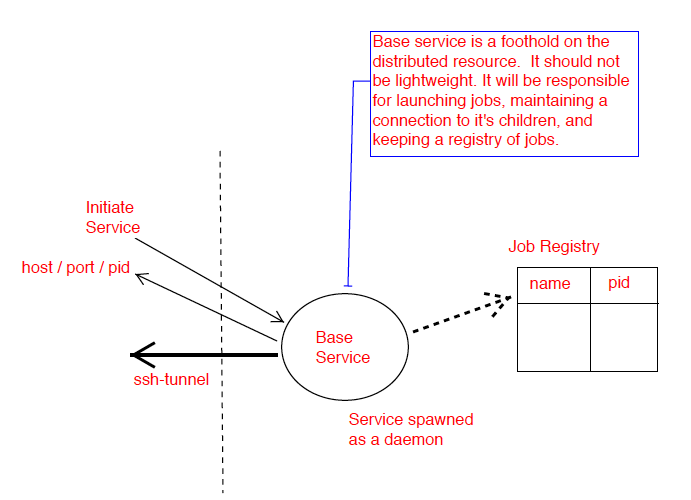

pathos: a framework for parallel graph management and execution in heterogeneous computing
|| User Guide || Download || Tutorials || Manual || License || Feedback ||
About Pathos
Pathos is a framework for heterogenous computing. It primarily provides the communication mechanisms for configuring and launching parallel computations across heterogenous resources. Pathos provides stagers and launchers for parallel and distributed computing, where each launcher contains the syntactic logic to configure and launch jobs in an execution environment. Some examples of included launchers are: a queue-less MPI-based launcher, a ssh-based launcher, and a multiprocessing launcher. Pathos also provides a map-reduce algorithm for each of the available launchers, thus greatly lowering the barrier for users to extend their code to parallel and distributed resources. Pathos provides the ability to interact with batch schedulers and queuing systems, thus allowing large computations to be easily launched on high-performance computing resources. One of the most powerful features of pathos is "tunnel", which enables a user to automatically wrap any distributed service calls within a ssh-tunnel.
Pathos is divided into five subpackages::
- dill: python object serialization
- klepto: persistent caching to memory, disk, or database
- pox: utilities for filesystem exploration and automated builds
- pyina: a MPI-based parallel mapper and launcher
- pathos: distributed parallel map-reduce and ssh communication
Pathos Subpackage
 The pathos subpackage provides a few basic tools to make distributed computing more accessable to the end user. The goal of pathos is to allow the user to extend their own code to distributed computing with minimal refactoring.
Pathos provides methods for configuring, launching, monitoring, and controlling a service on a remote host. One of the most basic features of pathos is the ability to configure and launch a RPC-based service on a remote host. Pathos seeds the remote host with a small portpicker script, which allows the remote host to inform the localhost of a port that is available for communication.
Beyond the ability to establish a RPC service, and then post requests, is the ability to launch code in parallel. Unlike parallel computing performed at the node level (typically with MPI), pathos enables the user to launch jobs in parallel across heterogeneous distributed resources. Pathos provides a distributed map-reduce algorithm, where a mix of local processors and distributed RPC services can be selected. Pathos also provides a very basic automated load balancing service, as well as the ability for the user to directly select the resources.
The high-level "pp_map" interface, yields a map-reduce implementation that hides the RPC internals from the user. With pp_map, the user can launch their code in parallel, and as a distributed service, using standard python and without writing a line of server or parallel batch code.
RPC servers and communication in general is known to be insecure. However, instead of attempting to make the RPC communication itself secure, pathos provides the ability to automatically wrap any distributes service or communication in a ssh-tunnel. Ssh is a universally trusted method. Using ssh-tunnels, pathos has launched several distributed calculations on national lab clusters, and to date has performed test calculations that utilize node-to-node communication between two national lab clusters and a user's laptop. Pathos allows the user to configure and launch at a very atomistic level, through raw access to ssh and scp.
Pathos is in the early development stages, and any user feedback is highly appreciated. Contact Mike McKerns [mmckerns at caltech dot edu] with comments, suggestions, and any bugs you may find. A list of known issues is maintained at http://mmckerns.github.io/project/pathos/query.
Major Features
Pathos provides a configurable distributed parallel-map reduce interface to launching RPC service calls, with::
- a map-reduce interface that extends the python 'map' standard
- the ability to submit service requests to a selection of servers
- the ability to tunnel server communications with ssh
- automated load-balancing between multiprocessing and RPC servers
The pathos core is built on low-level communication to remote hosts using ssh. The interface to ssh, scp, and ssh-tunneled connections can::
- configure and launch remote processes with ssh
- configure and copy file objects with scp
- establish an tear-down a ssh-tunnel
To get up and running quickly, pathos also provides infrastructure to::
- easily establish a ssh-tunneled connection to a RPC server
Current Release
This release version is pathos-0.1a1. You can download it here.
The latest released version of pathos is available from::
Pathos is distributed under a modified BSD license.
Development Release
If you like living on the edge, and don't mind the promise of a little instability,
you can get the latest development release with all the shiny new features at::
or even better, fork us on our github mirror of the svn trunk::
Citation
If you use pathos to do research that leads to publication, we ask that you
acknowledge use of pathos by citing the following in your publication::
M.M. McKerns, L. Strand, T. Sullivan, A. Fang, M.A.G. Aivazis,
"Building a framework for predictive science", Proceedings of
the 10th Python in Science Conference, 2011;
http://arxiv.org/pdf/1202.1056
Michael McKerns and Michael Aivazis,
"pathos: a framework for heterogeneous computing", 2010- ;
http://mmckerns.github.io/project/pathos
More Information
Probably the best way to get started is to look at a few of the examples provided within pathos. See pathos.examples for a set of scripts that demonstrate the configuration and launching of communications with ssh and scp. The source code is also generally well documented, so further questions may be resolved by inspecting the code itself, or through browsing the reference manual. For those who like to leap before they look, you can jump right to the installation instructions. If the aforementioned documents do not adequately address your needs, please send us feedback.
Pathos is an active research tool. There are a growing number of publications and presentations that discuss real-world examples and new features of pathos in greater detail than presented in the user's guide. If you would like to share how you use pathos in your work, please send us a link.